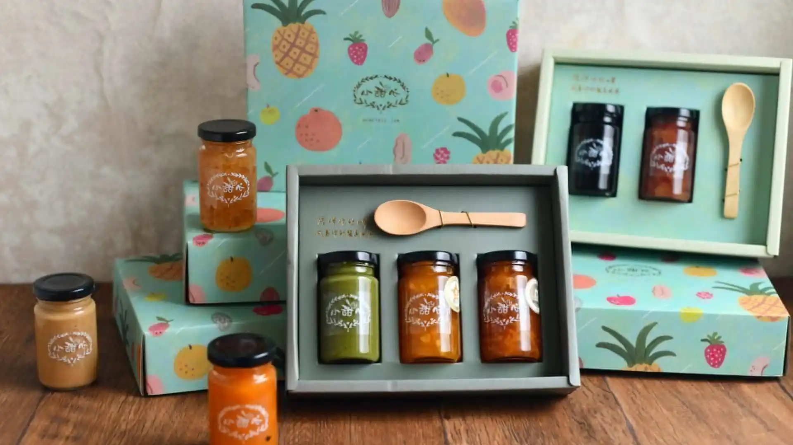

「企業送禮推薦」
採購者還沒決定品牌。
用搜尋需求選題，讓文章替小甜心接觸新的送禮買家。
DEMO 2026.11.23 10:30
瑪卡鎷網路行銷

小甜心已有品牌故事、得獎商品與禮盒，也有線上商店。
對方第一次進站，需要知道這份禮盒適合送誰、怎麼選，以及如何提出大量訂購需求。
SEO 是搜尋引擎最佳化：整理網站與內容，讓搜尋系統理解，也讓買家更容易找到適合的資訊。
採購者還沒決定品牌。
回答送誰、怎麼挑。
理解特色與供應內容。
告訴我們數量與日期。
本頁為路徑示意，非小甜心已取得的排名或訂單。自然搜尋位置不按每次點擊付費，研究、內容與經營仍需要投入。
不是只把品牌故事寫得更長，而是新增採購者正在找的答案。
看搜尋量、廣告出價與實際結果，挑選符合商品與送禮情境的題目。
採訪品牌、核對商品事實，撰寫選購比較、送禮指南與使用解答。
文章連到商品或大量訂購聯絡入口，持續觀察搜尋曝光、點擊與詢問。
點選管道，看看它對小甜心的用途。
企業送禮、果醬禮盒等需求，透過網站內容承接。
需要時間累積，並持續檢查頁面與內容。
看相關搜尋曝光、點擊與有效詢問。
適合已有採購頁、希望測試檔期需求的情境。
另有媒體預算與管理工作，先設定可承接範圍。
看詢問成本、報價進度與來源成交。
以開箱、食用搭配或送禮故事，增加產品認識。
受眾契合、素材品質及授權方式影響合作價值。
看來源造訪、有效詢問與可辨識訂單。
若有可對外服務的實體據點，可整理位置、資訊與評價。
先核對商家資格與實際營業方式。
看來電、網站點擊與到訪行動。
持續介紹季節果醬、禮盒與品牌日常，接續詢問。
需要固定素材、回覆與顧客經營。
看有效私訊、回覆與回購來源。
品牌故事、商品事實與採購解答要一致、可核對。
延續 SEO 基礎，引用與答案呈現會變動。
看固定題組的品牌提及、引用與後續行動。
實際畫面同時包含網頁結果、AI摘要與圖片等區塊。
圖片中的小甜心商品來自Pinkoi通路；這不等於官網排名或官網獲AI文字引用。搜尋畫面會隨時間、位置與使用情境變動。
選文章題目，要同時看需求規模、購買意圖，以及小甜心是否能回答。
例如「企業送禮」260次／月，是市場查詢次數；不等於小甜心可得到260位客戶。
「企業送禮」NT$30.06–80.39，是歷史頁首出價低高區間；實際廣告每次點擊費用會不同。
研究與撰寫內容，爭取自然搜尋曝光。合作費依方案，與Google廣告出價分開。
Google Ads Keyword Planner；2026/11/21查詢，台灣／繁體中文／Google Search／TWD，2025/11–2026/10月平均。近似詞可能重疊，不加總；空值不代表沒有人搜尋。
這些詞比泛泛的「果醬」，更接近本次想開發的企業送禮需求。
| 完整搜尋詞 | 平均月搜尋量（次） | 頁首廣告出價低–高 |
|---|---|---|
| 企業送禮 | 260 | NT$30.06–80.39 |
| 企業贈禮 | 140 | NT$26.88–96.20 |
| 企業送禮推薦 | 140 | NT$23.24–77.01 |
| 企業伴手禮 | 50 | NT$23.36–56.23 |
| 公司送禮 | 50 | NT$27.20–74.64 |
| 客戶送禮 | 20 | NT$19.92–51.09 |
Google Ads Keyword Planner；2026/11/21查詢，台灣／繁體中文／Google Search／TWD，2025/11–2026/10月平均。近似詞可能重疊，不加總；空值不代表沒有人搜尋。
從比較商品的人開始，讓手工水果風味與得獎背景有機會被認識。
| 完整搜尋詞 | 平均月搜尋量（次） | 頁首廣告出價低–高 |
|---|---|---|
| 果醬 | 3,600 | NT$0.77–9.96 |
| 果醬推薦 | 320 | NT$0.64–10.88 |
| 手工果醬 | 210 | NT$1.69–10.44 |
| 手工果醬推薦 | 50 | NT$1.33–12.85 |
| 草莓果醬推薦 | 210 | NT$0.42–5.52 |
| 柑橘果醬 | 90 | NT$0.70–13.27 |
「果醬」包含零售、食譜等多種意圖；不把3,600次搜尋全部當成企業採購需求。
Google Ads Keyword Planner；2026/11/21查詢，台灣／繁體中文／Google Search／TWD，2025/11–2026/10月平均。近似詞可能重疊，不加總；空值不代表沒有人搜尋。
地方選購文章可以帶入旗山水果與農友故事，作為企業採購之外的輔助入口。
| 完整搜尋詞 | 平均月搜尋量（次） | 頁首廣告出價低–高 |
|---|---|---|
| 高雄伴手禮 | 12,100 | NT$0.41–7.68 |
| 高雄伴手禮推薦 | 2,400 | NT$0.30–7.62 |
| 高雄隱藏版伴手禮 | 880 | NT$0.53–8.39 |
| 旗山伴手禮 | 480 | 尚未取得 |
| 台灣伴手禮 | 5,400 | NT$2.53–24.01 |
| 台灣伴手禮推薦 | 1,300 | NT$0.89–20.36 |
地方詞也包含旅遊、到店與其他食品需求；高搜尋量不代表都適合小甜心，優先順序仍以企業贈禮為主。
Google Ads Keyword Planner；2026/11/21查詢，台灣／繁體中文／Google Search／TWD，2025/11–2026/10月平均。近似詞可能重疊，不加總；空值不代表沒有人搜尋。
婚禮小物、喜蜜與彌月禮，可延伸出另一組送禮內容。
| 完整搜尋詞 | 平均月搜尋量（次） | 頁首廣告出價低–高 |
|---|---|---|
| 婚禮小物 | 4,400 | NT$2.76–18.00 |
| 婚禮小物推薦 | 590 | NT$2.82–18.48 |
| 實用婚禮小物 | 140 | NT$3.57–19.05 |
| 婚禮小物果醬 | 30 | NT$2.65–11.41 |
| 果醬婚禮小物 | 10 | NT$2.05–10.02 |
| 完整搜尋詞 | 平均月搜尋量（次） | 頁首廣告出價低–高 |
|---|---|---|
| 喜蜜 | 110 | NT$1.62–15.38 |
| 蜂蜜婚禮小物 | 50 | NT$0.64–16.58 |
喜蜜作相近需求研究，不表示小甜心販售蜂蜜；比較依商品事實，不使用不相符的品名承接。
| 完整搜尋詞 | 平均月搜尋量（次） | 頁首廣告出價低–高 |
|---|---|---|
| 彌月禮 | 1,900 | NT$3.75–24.99 |
| 彌月禮推薦 | 210 | NT$3.70–24.22 |
| 彌月禮盒 | 20 | 尚未取得 |
本案討論贈送親友的彌月回禮，不建議嬰兒食用；不預先承諾小瓶分裝、客製貼紙或配送條件。
Google Ads Keyword Planner；2026/11/22查詢，台灣／繁體中文／Google Search／TWD，2025/11–2026/10月平均。近似詞可能重疊，不加總；空值不代表沒有人搜尋。
婚禮與彌月是延伸選題，原本企業贈禮仍是主軸；實際商品、數量與包裝依品牌可承接內容確認。
研究不只是一串字，而是把每組需求轉成能回答的文章。
| 完整搜尋詞 | 平均月搜尋量（次） | 頁首廣告出價低–高 |
|---|---|---|
| 企業送禮 | 260 | NT$30.06–80.39 |
| 企業贈禮 | 140 | NT$26.88–96.20 |
| 企業送禮推薦 | 140 | NT$23.24–77.01 |
| 企業伴手禮 | 50 | NT$23.36–56.23 |
| 公司送禮 | 50 | NT$27.20–74.64 |
| 客戶送禮 | 20 | NT$19.92–51.09 |
| 客戶送禮推薦 | 40 | NT$24.53–54.93 |
| 完整搜尋詞 | 平均月搜尋量（次） | 頁首廣告出價低–高 |
|---|---|---|
| 果醬推薦 | 320 | NT$0.64–10.88 |
| 手工果醬 | 210 | NT$1.69–10.44 |
| 手工果醬推薦 | 50 | NT$1.33–12.85 |
| 草莓果醬推薦 | 210 | NT$0.42–5.52 |
| 柑橘果醬 | 90 | NT$0.70–13.27 |
| 天然果醬 | 110 | NT$2.98–12.19 |
| 低糖果醬 | 40 | NT$1.08–15.23 |
| 完整搜尋詞 | 平均月搜尋量（次） | 頁首廣告出價低–高 |
|---|---|---|
| 高雄伴手禮 | 12,100 | NT$0.41–7.68 |
| 高雄伴手禮推薦 | 2,400 | NT$0.30–7.62 |
| 高雄隱藏版伴手禮 | 880 | NT$0.53–8.39 |
| 高雄必買伴手禮 | 880 | NT$0.34–7.41 |
| 旗山伴手禮 | 480 | 尚未取得 |
| 台灣伴手禮 | 5,400 | NT$2.53–24.01 |
| 台灣伴手禮推薦 | 1,300 | NT$0.89–20.36 |
| 完整搜尋詞 | 平均月搜尋量（次） | 頁首廣告出價低–高 |
|---|---|---|
| 婚禮小物 | 4,400 | NT$2.76–18.00 |
| 婚禮小物推薦 | 590 | NT$2.82–18.48 |
| 實用婚禮小物 | 140 | NT$3.57–19.05 |
| 婚禮小物果醬 | 30 | NT$2.65–11.41 |
| 果醬婚禮小物 | 10 | NT$2.05–10.02 |
| 喜蜜 | 110 | NT$1.62–15.38 |
| 蜂蜜婚禮小物 | 50 | NT$0.64–16.58 |
| 彌月禮 | 1,900 | NT$3.75–24.99 |
| 彌月禮推薦 | 210 | NT$3.70–24.22 |
| 彌月禮盒 | 20 | 尚未取得 |
| 完整搜尋詞 | 平均月搜尋量（次） | 頁首廣告出價低–高 |
|---|---|---|
| 果醬要冰嗎 | 110 | 尚未取得 |
| 果醬保存 | 40 | 尚未取得 |
| 果醬吃法 | 20 | 尚未取得 |
Google Ads Keyword Planner；2026/11/21–22查詢，台灣／繁體中文／Google Search／TWD，2025/11–2026/10月平均。近似詞可能重疊，不加總；空值不代表沒有人搜尋。
這是本案研究候選，尚未等於合約定稿題目。廣告競爭與出價不代表SEO難度。
小甜心已有品牌、農友、商品與保存資訊；可以再增加幫買家比較與選擇的內容。
| 已有的內容基礎 | 建議增加的買家問題 |
|---|---|
| 品牌與農友故事 | 企業送客戶，怎麼挑有台灣特色的禮物？ |
| 果醬與節慶禮盒商品 | 手工果醬送禮，怎麼比較口味與保存？ |
| 保存方式說明 | 果醬開封要冰嗎？送禮前要提醒什麼？ |
以上為本次檢視樣本與建議延伸方向，不宣稱已完整盤點網站每一篇文章。
題目先看業務目標與可回答的資訊，再看搜尋量；相近詞合併回答。
| 文章方向示例 | 研究依據（月搜尋量） | 讀者看完的下一步 |
|---|---|---|
| 企業送禮怎麼選？送客戶前的選禮指南 | 企業送禮260／企業贈禮140 | 了解禮盒後提出大量訂購需求 |
| 手工果醬推薦怎麼挑？口味、搭配與保存比較 | 果醬推薦320／手工果醬210 | 比較現售果醬與禮盒 |
| 高雄特色伴手禮指南：用水果風味傳達在地心意 | 高雄伴手禮12,100／旗山伴手禮480 | 認識旗山品牌與可供應禮盒 |
| 果醬要冰嗎？開封前後保存與送禮提醒 | 果醬要冰嗎110／果醬保存40 | 解決疑慮，查看對應商品 |
Google Ads Keyword Planner；2026/11/21查詢，台灣／繁體中文／Google Search／TWD，2025/11–2026/10月平均。近似詞可能重疊，不加總；空值不代表沒有人搜尋。
題目示例：果醬禮盒怎麼挑？從口味、保存到企業送禮的選購指南。
讓讀者知道果醬的搭配方式，以及送禮後的保存注意事項。
依可供應組合介紹風味與規格，將故事變成選擇理由。
少量購買可看商品；企業需求則填用途、數量、預算與日期。
官網保存頁：果醬未開封陰涼存放、開封冷藏；抹醬收到後須冷藏。文章依各商品實際標示說明。
把商品與企業資訊整理得更容易理解，再以實際查詢畫面觀察品牌提及與引用。
品牌名稱、產地、規格、獎項與聯絡資訊可以互相核對。
禮盒適合誰、如何保存、怎麼提出大量訂購需求。
讓獎項、農友故事與外部介紹，有清楚的來源可閱讀。
持續記錄與企業贈禮相關的完整問題、平台、日期與引用網址，觀察實際呈現，再調整內容。
地方食品品牌，將產品知識延伸到送禮比較與採購資訊。
累計：2025-07-16 至 2026-11-15。資料更新：2026/11/18。
選取後顯示該月點擊、曝光與月份口徑。
| 月份 | 點擊（次） | 曝光（次） | 月份完整性 |
|---|---|---|---|
| 2025-07 | 615 | 8,853 | 不完整 |
| 2025-08 | 1,276 | 24,481 | 完整 |
| 2025-09 | 1,496 | 28,980 | 完整 |
| 2025-10 | 1,372 | 27,933 | 完整 |
| 2025-11 | 1,674 | 37,024 | 完整 |
| 2025-12 | 2,365 | 65,824 | 完整 |
| 2026-01 | 2,636 | 85,366 | 完整 |
| 2026-02 | 1,764 | 68,876 | 完整 |
| 2026-03 | 2,226 | 75,653 | 完整 |
| 2026-04 | 2,501 | 71,617 | 完整 |
| 2026-05 | 2,329 | 76,020 | 完整 |
| 2026-06 | 2,551 | 74,152 | 完整 |
| 2026-07 | 4,418 | 104,959 | 完整 |
| 2026-08 | 6,054 | 134,275 | 完整 |
| 2026-09 | 6,815 | 149,554 | 完整 |
| 2026-10 | 2,098 | 61,253 | 完整 |
| 2026-11 | 1,660 | 55,394 | 不完整 |
圖表僅呈現完整月份；累計包含首尾不完整月份。不是人數或訂單，季節、品牌活動及其他行銷都可能影響變化。
近期完整月點擊由2026/09的6,815降至10月2,098；呈現真實波動，不以累計數字推論穩定成長。個案結果不代表小甜心可取得相同成果。
從「要送什麼」開始，帶讀者比較商品，再連到企業服務。
文章先談送禮時機與選擇條件，再整理禮品選項及對應商品連結，最後提供企業客製服務入口。
| 網址成效 | 累計數值 |
|---|---|
| 自然搜尋點擊 | 415次 |
| 自然搜尋曝光 | 22,120次 |
統計：2025/07/16–2026/11/15；文章上架2025/10/23。這是網址資料，不是單一關鍵字成效。
閱讀實際文章本次檢視的是現行文章結構，不能認定目前版本是過往成效的唯一原因；不移用豐滄的客製能力、價格或商品條件。
在地品牌能以選購內容接觸新客；企業採購仍要另外整理服務資訊。
累計：2025-07-05 至 2026-11-04。資料更新：2026/11/07。
選取後顯示該月點擊、曝光與月份口徑。
| 月份 | 點擊（次） | 曝光（次） | 月份完整性 |
|---|---|---|---|
| 2025-07 | 1,494 | 65,468 | 不完整 |
| 2025-08 | 4,064 | 94,561 | 完整 |
| 2025-09 | 1,427 | 104,543 | 完整 |
| 2025-10 | 1,779 | 118,486 | 完整 |
| 2025-11 | 1,711 | 142,079 | 完整 |
| 2025-12 | 1,547 | 113,214 | 完整 |
| 2026-01 | 1,605 | 124,407 | 完整 |
| 2026-02 | 2,063 | 145,949 | 完整 |
| 2026-03 | 1,655 | 166,230 | 完整 |
| 2026-04 | 2,760 | 195,774 | 完整 |
| 2026-05 | 4,684 | 209,445 | 完整 |
| 2026-06 | 4,086 | 184,774 | 完整 |
| 2026-07 | 5,068 | 179,748 | 完整 |
| 2026-08 | 5,372 | 177,877 | 完整 |
| 2026-09 | 5,341 | 184,734 | 完整 |
| 2026-10 | 4,444 | 144,955 | 完整 |
| 2026-11 | 551 | 18,303 | 不完整 |
圖表僅呈現完整月份；累計包含首尾不完整月份。不是人數或訂單，季節、品牌活動及其他行銷都可能影響變化。
文章整理伴手禮選項、購買方式與挑選問題，並提供宏展禮盒的商品入口。讀者不必先知道品牌，才有機會看到產品。
| 代表網址 | 自然點擊 | 自然曝光 |
|---|---|---|
| 嘉義伴手禮文章 | 18,146次 | 174,881次 |
網址資料期間：2025/07/05–2026/11/04。
閱讀宏展實際文章用可供應商品回答選禮需求，讓產地故事與禮盒互相連接。宏展同時有到場消費情境，小甜心應依實際營運選題，不直接複製景點策略。
個案結果不代表本案保證；近期完整月份也保留下降，不裁掉波動。
從企業送禮、婚禮小物，到節慶選禮文章，延伸陌生買家的接觸入口。
累計：2025-07-05 至 2026-11-04。資料更新：2026/11/07。
選取後顯示該月點擊、曝光與月份口徑。
| 月份 | 點擊（次） | 曝光（次） | 月份完整性 |
|---|---|---|---|
| 2025-07 | 547 | 23,415 | 不完整 |
| 2025-08 | 844 | 33,006 | 完整 |
| 2025-09 | 991 | 41,715 | 完整 |
| 2025-10 | 1,252 | 63,975 | 完整 |
| 2025-11 | 1,343 | 80,005 | 完整 |
| 2025-12 | 5,039 | 175,151 | 完整 |
| 2026-01 | 3,130 | 163,260 | 完整 |
| 2026-02 | 2,941 | 189,292 | 完整 |
| 2026-03 | 2,405 | 149,078 | 完整 |
| 2026-04 | 2,211 | 133,985 | 完整 |
| 2026-05 | 2,528 | 124,122 | 完整 |
| 2026-06 | 2,730 | 119,767 | 完整 |
| 2026-07 | 3,025 | 107,215 | 完整 |
| 2026-08 | 3,399 | 104,824 | 完整 |
| 2026-09 | 3,037 | 113,590 | 完整 |
| 2026-10 | 2,343 | 74,933 | 完整 |
| 2026-11 | 295 | 9,522 | 不完整 |
圖表僅呈現完整月份；累計包含首尾不完整月份。不是人數或訂單，季節、品牌活動及其他行銷都可能影響變化。
近期完整月：2026/09點擊3,037、曝光113,590；10月點擊2,343、曝光74,933，保留真實下降與季節波動。業主回饋日期2025/12/22。不是小甜心的成效保證。
尋尋覓蜜用買家的預算與挑選問題作文章入口，再介紹合適的自家禮盒。
| 代表網址累計成效 | 數值 |
|---|---|
| 自然搜尋點擊 | 4,424次 |
| 自然搜尋曝光 | 128,871次 |
GSC 2025/07/05–2026/11/04，網址 /500exchangegifts。不是「500元交換禮物」單一查詢的點擊或固定排名。
閱讀500元交換禮物實際文章先整理選禮顧慮與適合的情境，讓還沒決定品牌的人願意讀。
用食品、生活用品等類型協助比較，回答收禮對象與包裝問題。
在選禮原則與文末放入品牌商品連結，讀完後有清楚下一步。
婚禮送客、彌月回禮或交換禮物，先回答送誰、怎麼挑與保存疑慮。
以現售果醬、規格與品牌故事說明選擇理由；依可供應商品決定適合的預算題。
文章連回商品；數量較多的需求，接到現有公司團體大量訂購聯絡入口。
| 完整搜尋詞 | 平均月搜尋量（次） | 頁首廣告出價低–高 |
|---|---|---|
| 500元交換禮物 | 2,900 | NT$1.99–12.21 |
| 500元交換禮物推薦 | 390 | NT$0.76–14.80 |
| 500元交換禮物ptt | 170 | NT$0.65–13.69 |
Google Ads Keyword Planner；2026/11/22查詢，台灣／繁體中文／Google Search／TWD，2025/11–2026/10月平均。近似詞可能重疊，不加總；空值不代表沒有人搜尋。
目前文章有部分超過500元的商品，小甜心選題須依實售價格與規格安排，不直接移用價格、品項或品牌承諾。現行內容不視為過往成效的唯一原因。
瑪卡鎷主責研究與文章製作，品牌提供正確商品資訊並確認內容。
以搜尋量、出價、實際搜尋內容與企業贈禮目標，確認文章要回答的問題。
核對口味、農友、獎項、規格與保存；撰寫選購指南和相關解答。
小甜心確認商品事實與供應資訊；文章連到現售商品和大量訂購入口。
看文章帶來哪些查詢、曝光、點擊與有效詢問，再調整後續選題。
網站正式上線後每月一篇，至所選方案的合約總篇數完成。網站調整另依實際工作範圍確認；交付排程與搜尋成效分開。
把網站資料與實際業務紀錄接起來，才知道哪種需求值得持續經營。
| 階段 | 觀察內容 | 判讀方式 |
|---|---|---|
| 搜尋 | 相關查詢的曝光、點擊與頁面 | 使用GSC實際資料，與Ahrefs估算分開 |
| 網站行動 | 企業頁閱讀、詢問入口點擊、表單完成 | 入口點擊不直接等於有效詢問 |
| 有效詢價 | 用途、數量、預算、日期與可回覆對象 | 由品牌判斷能否承接，排除重複與無效訊息 |
| 報價與成交 | 有無報價、後續回覆與訂購 | 記錄來源與狀態，區分引薦、自然搜尋、廣告與其他通路 |
AI引用以固定題組、時間與平台記錄；不把單次答案或單一排名當成合作成敗。
先看每期付款，再比較平均每月投入、合作期間與文章總量。
網站正式上線後每月一篇，至所選方案的合約總篇數完成。零利率分期最高24期。三年方案服務36個月、付款24期；「平均每月投入」是按服務期間攤算的比較金額，實際每期付款另列。選擇僅作方案比較。其他行銷管道的工作與費用，依需求確認。
今天先對齊主推需求，讓合作內容有清楚的目標。
選擇今天想優先討論的方向。
接著一起確認
主推商品與採購資訊
網站、內容與推廣的工作範圍
資料、審稿與上線的安排
瑪卡鎷網路行銷